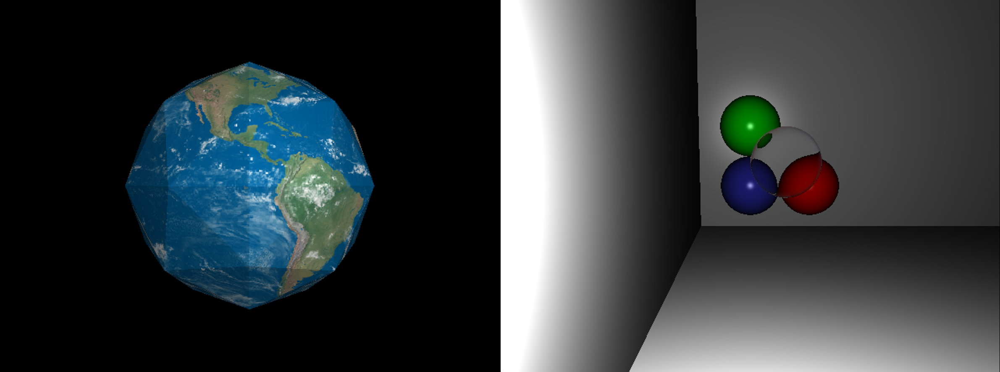

Ray Tracer
This graphics project uses ray tracing to generate images of objects with different properties in a three-dimensional environment. It works by projecting a ray from a specified camera position into an environment and outputting the specific pixel color returned by the ray. After projecting thousands of rays, an image can then be constructed using the returned pixel color values. The rays emulate the behavior of light rays, allowing for intricacies such as shade or transparency to be seen in the output image.
Skills and methods:
- C++: Language used to construct the ray tracer by employing object orientated programming principles.
- Vector math: Utilized to calculate the direction of each projected ray.
- Optical equations: To emulate the behavior of light rays by accounting for refraction of light and phong shading on objects.
- Barycentric coordinates: To accurately map custom textures onto objects, enhancing the realism of meshes.